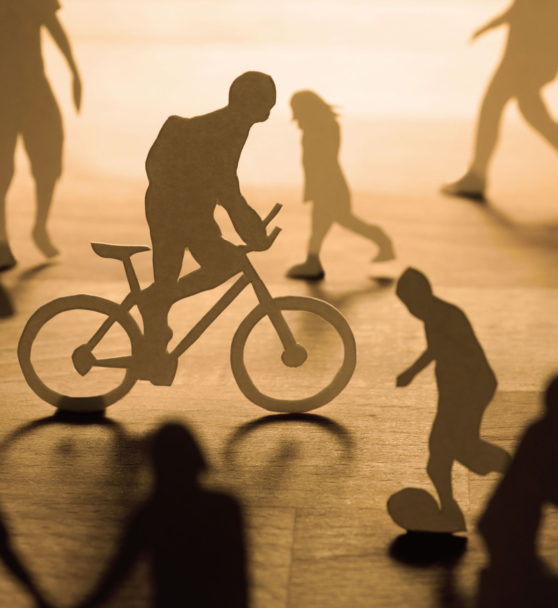

COLLEGE OF SOCIAL SCIENCES • 사회과학대학

|
인류번영과 국가, 사회 및 교회의 복지를 이끌어 가는 사회복지 지도자 양성
|
|
사회복지학부
SCHOOL OF SOCIAL WELFARE
|
|
 mysoongsil.ssu.ac.kr
mysoongsil.ssu.ac.kr
|
 02-820-0500
02-820-0500
|
|
학과 설립
2011 년
|
입학 정원
38 명
|
교직과정 개설여부
o
x
|
전임교원
8 명
|
학과 소개
2010년 학과에서 학부로 개편한 숭실대학교 사회복지학부는 오랜 역사와 전통을
기반으로 사회복지 실천 분야의 선두주자로 손꼽히는 학부다. 세부 전공 영역의
우수한 교수진을 통해 심도 있는 교육을 제공하며, 사회복지 실천과 정책·행정 분야를
아우르는 통합교육을 실시하고 있다. 숭실대학교 사회복지학부는 사회복지
기관과 연계한 실습 프로그램 강화를 통해 현장 감각과 실무 기술을 두루 갖춘 사회복지
전문가 양성을 목표로 하고 있다.
학과 인재상
인간존중 및 사회정의에 대한 사명의식과 봉사정신을 가진 인재
상대방에 대한 배려와 협동심을 가진 인재
원만한 대인관계를 유지시킬 수 있는 의사소통능력이 있는 인재
다른 사람의 욕구와 행동에 적절히 대응할 수 있는 문제해결능력이 있는 인재
타인에 대한 배려, 사회성, 정직성뿐만 아니라 정보화 및 국제화 시대의 적응능력을
갖춘 인재
주요 커리큘럼
사회복지학개론, 사회복지와문화다양성, 인간행동과사회환경, 사회문제론,
자원봉사론
아동복지론, 국제사회복지론, 복지현장의이해, 사회복지조사론,
사회복지실천론, 사회복지정책론, 사회복지정치경제론, 사회복지자료분석론,
정신건강사회복지론, 청소년복지론, 가족복지론, 사회복지역사, 여성복지론,
사회복지실천기술론
노인복지론, 교정복지론, 상담실기, 프로그램개발과평가, 의료사회복지론,
중독과사회복지실천, 사회보장론, 사회복지실무실습, 장애인복지론,
학교사회복지론, 사례관리론, 지역사회복지론, 사회복지법제와실천,
복지국가론, 사회복지윤리와철학
사회복지현장실습, 산업복지론, 사회복지세미나, 가족상담및가족치료,
사회복지행정론, 사회서비스정책, 사회복지세미나2, 집단사회복지실천론,
사회복지와모금, 캡스톤디자인(3·4학년)
선택교과 가이드
일반선택
확률과통계, 정치와법, 사회·문화, 생활과윤리, 철학, 심리학
동아리 및 소모임 소개
피플소시오(사회심리극), 애사(아동·청소년분야), 밀알(장애인분야), 사회사업연구학회(사회문제토론),
나비효과(도박문제예방), 신우회(기독교), 소셜일레븐(축구), 은빛나래(노인복지분야)
학과 특색 프로그램
글로벌인재양성:해외실습(미국,일본)및외국대학과의교류
전문연구분야인력양성: 학술연구동아리의구성및사회복지학술제를개최
(학술 연구동아리구성, 숭실사회복지연구발간)
복지투어: 다양한 사회복지기관들의 특성과 현황을 이해하고, 예비사회복지사의 자질과능력을 배양
워크숍: 매년 재학생들과 동문들의 만남
사회복지사 자격증 취득 지원
안성태장학금,동문장학금
취득 가능 자격증
사회복지사1급, 2급(한국사회복지사협회)
졸업 후 진로
정부 및 공공기관(사회복지전담공무원, 국민건강보험공단, 근로복지공단 등,
한국노동연구원, 산업안전보건연구원 등, 한국보건복지정보개발원, 한국사회복지협의회)
복지기관 및 센터(종합사회복지관, 장애인종합사회복지관, 노인종합사회복지과,
아동복지관, 지역아동센터, 건강가정지원센터, 청소년상담지원센터, 청소년수련원, 수련관)
국제기구 및 NGO(월드비전, 굿네이버스, 기아대책, 유니세프, 굿피플, 초록우산
어린이재단, Save the children,KOICA(한국국제협력단), 대한적십자사)
기타분야(학교, 교육청, 정신건강복지센터, 종합병원, 교정시설 및 보호기관,
기업복지 및 재단, 사회복지관련협회(사회복지사협회등), 모금지원단체(공동모금회) 등)
청소년복지, 교정복지, 사회복지행정, 아동복지, 가족치료, 노인복지, 사회복지정책,
다문화사회복지, 의료사회복지, 장애인복지, 사례관리, 여성복지, 사회서비스, 정신 건강